_files/r2.gif)
_files/yrybook.jpg)
_files/WebFbanner.png)
配色讲道理！Thinkful网站配色完全学习指南(上)
毫无疑问网站的配色是非常重要的。创建一套具有凝聚力又能抓人眼球的色板是创建一个成功网站的先决条件。在技术发展的驱动之下，我们在网页设计的时候可以更加精确地控制色彩，这也使得色板的精细打磨显得更加必要和重要。今天这个网站配色完全学习指南，就是想更加系统地解决这个问题。
这篇指南的作者是Aleksandra Tamarina，发表于Thinkful网站，由优设编译。
入门
在开始探索配色和色板创建之道之前，你首先要考虑一下你想做一个什么样的网站，而创建这个网站的目的又是什么。
另一个需要考虑的重要因素是，你的网站是否拥有现成的品牌。如果你拥有现成的品牌那么就意味着你构建网站的时候，会使用到现成的品牌风格指南，这时候你有着现成的色板，你只需要根据需求适当地拓展出不同深浅、色度的衍生色。当然，更多的时候，你需要从无到有构建一个全新的色板，而这篇文章正是要帮你完成这项任务。
构建网站的“情感”
色彩与品牌有着千丝万缕的联系。不同于语言和文字，色彩为品牌提供了一种非口头传达的意义和信息。而色彩给人的感觉和所蕴含的含义主要来源于所处的文化和环境。在深入了解一个网站之前，用户通常先注意到色彩，色彩所传达出来的情绪会下意识地感染用户，所以你可以利用这种原理来设计网站、优化品牌。
那么你需要向用户传递什么样的情感呢？你希望用户怎样和你的网站互动？这可能还得从品牌识别（BI）来考量（如果有的话），同时也可以让网站成为品牌的延伸。花点时间仔细想想吧。
接下来，我们一同来探讨一下，美国的文化背景下的大众品牌中的色彩的含义。
色彩的含义
下面是一些常见色彩的含义：
・红色：能量，力量，活力，领导地位，勇气，激情，快乐，危险，邪恶，愤怒，血，高识别度；
・橙色：开朗，热情，快乐，激情，魅力，创意，有趣，轻浮，华丽，粗鲁，低端；
・黄色：乐观，清新，法律，教育，傲慢，怯懦，疾病，背叛，幼稚；
・绿色：财富，金钱，平静，树木，野心，耐力，治愈，冷静，打赌，自然，完备，保护，羡慕，嫉妒，不成熟；
・蓝色：安全，守信，稳定，忠诚，智慧，信任，友爱，保鲜，勇气，科学，悲伤，抑郁，冷漠，稳重；
・紫色：神奇，神秘，灵性，潜意识，创造力，尊严，皇室，悲哀，残酷，自大，自负；
・黑色：强大，神秘，高贵，精致，功能性，死亡，病态，瘟疫，孤傲；
有些著名的品牌在色彩的情感传达上非常突出，麦当劳就是其中的佼佼者：
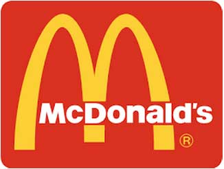 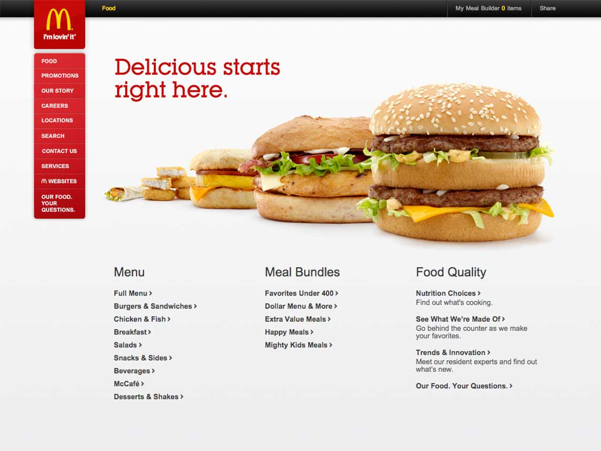麦当劳LOGO中，黄色的拱门能够唤起用户新鲜、快乐的情绪，黄色还能引起饥饿感。LOGO中的红色所包含的活力感、愉悦和能量会促使用户快速地离开，这样也就促使餐厅中人流的快速流转。作为快餐店，这样的色彩搭配构成了麦当劳独特的品牌情感传达，和品牌故事。虽然麦当劳官网目前还没有追随设计潮流，尚需要一些设计上的提升，但是它的色彩非常简明，并且专注于视频领域的推广和传播。有意思的是，同LOGO相比，在网页配色上相对降低了红色所占据的比例，因为这家快餐巨头想留住你来浏览，而非促使你离开。
不仅是麦当劳从这种配色方式中受益，许多同类的快餐店也使用了类似的配色，比如DairyQueen、BurgerKing、Wendy’s、Sonic以及Pizza Hut。这种配色方案的本质就是吸引人来购买，然后敦促他们离开，以便能服务更多人。
另外一个品牌配色的好案例就是Whole Foods了。
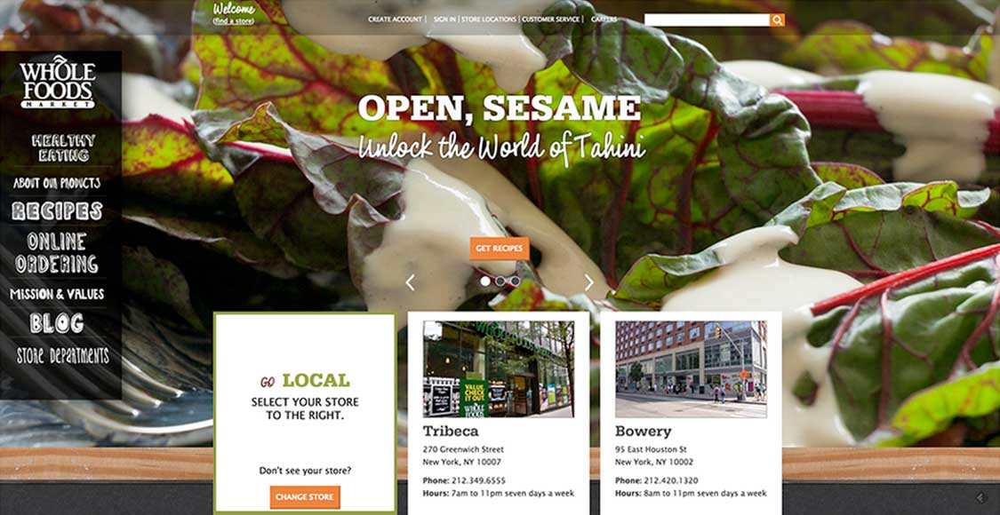绿色常常被赋予自然、环境和治愈等含义，而Whole Foods正是一个全天然有机食品品牌。这些有机食品和品牌与绿色完美的融合在一起，Wholefood.com 网站中使用了大量的绿色的元素和形象，唤起用户对于自然的认同感，配合黑色和白色这种中性色来完成整个网站的设计，三种色彩在网站设计中达到了平衡点。
除了Whole foods之外，同类型的食品杂货品牌Publix也使用了类似的配色方案来装点网站。如果你熟悉这类食品杂货品牌，你会发现这种绿色为主的配色应用得非常普遍，因为这种色彩使用可以呈现出品牌的自然和品质感。
谷歌是一个典型的多色彩使用的品牌。
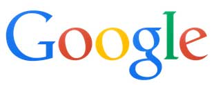 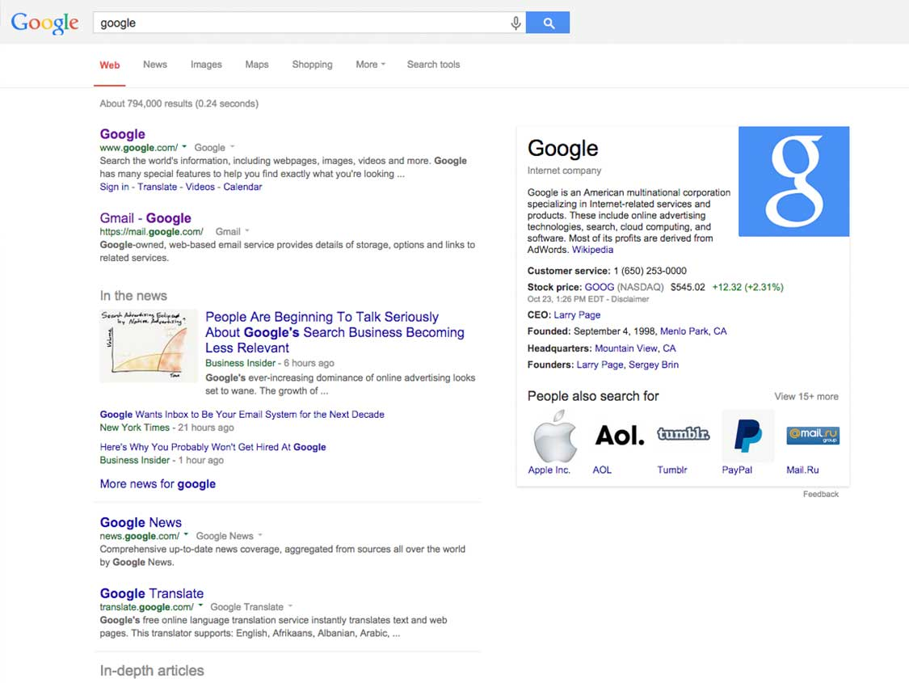使用多色彩的品牌通常都传递出创意、色彩和艺术性。虽然谷歌已经成长为一个庞大的科技企业，但是它依然保持着多年以前的那种创意、愉悦和自然。毫无疑问，谷歌掌控着搜索的艺术，谷歌搜索的主页也一直是以实用为主要诉求。虽然使用了多种色彩，但是谷歌还是选择蓝色作为LOGO中的基础色，这种选择你可以在谷歌的链接和小LOGO上感受到。而LOGO中其他的色彩，主要是赋予整个LOGO以层次感和对比度。
类似的LOGO还有苹果早期的品牌LOGO和奥林匹克的标识。当年苹果所发布的G3系列的iMac和iBook所使用的多彩塑料材质正好呼应了这种多彩的设计，后续的iPod也延续了这些色彩使用。奥林匹克也是，丰富的色彩正好呼应了人类的活力和竞争的主题。
探索网站配色
接下来，你要开始写下你的网站想要具备什么样的个性，想传达什么样的感情。有了这些基础的东西之后，你就可以根据这些含义来匹配颜色了。看看那些已经同类的、成型的品牌/网站所使用的配色吧，你再想想他们的品牌价值观是怎样的，他们的情感和色彩是如何结合到一起的，他们又是如何看待用户的。接下来，我们先看看下面的几个案例：
你想激发用户信心？
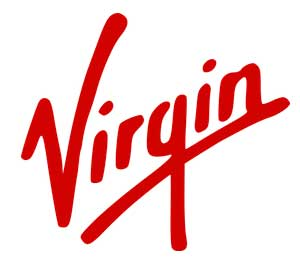 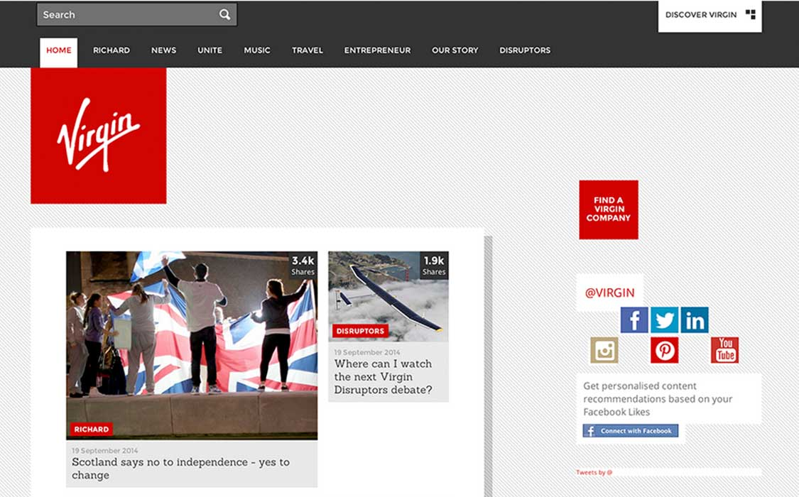作为一个大型品牌，Virgin 主要使用了红色和白色来传递信心的感觉，其中的红色传递出行动、能量和激情的感觉，让品牌具备了力量感。
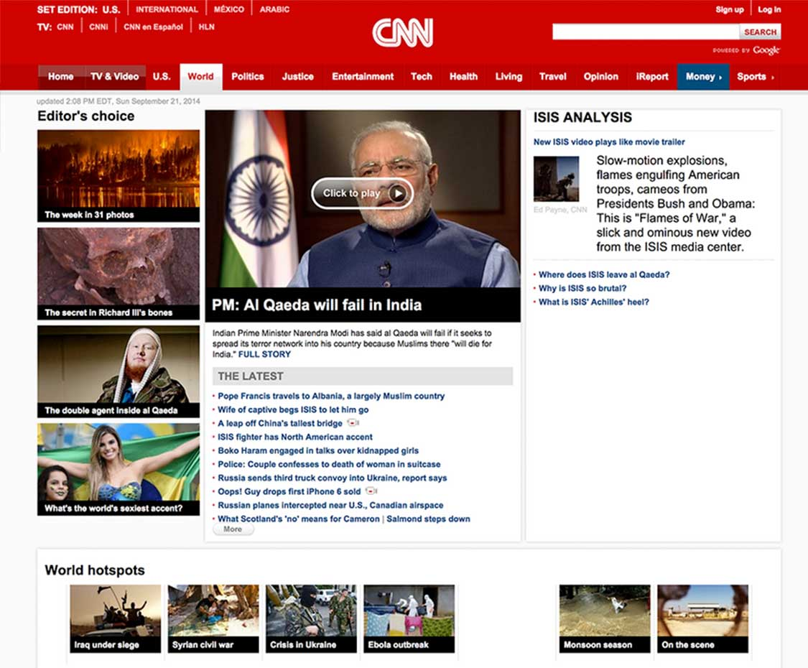CNN也是如此，他们需要用户和读者来相信他们的新闻来源。所以CNN使用了红色来表现他们的领导地位，以及激情、能量的感觉。
你想让用户感觉高端？
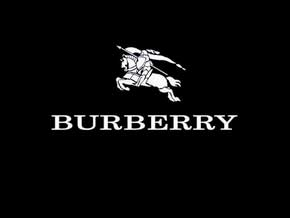 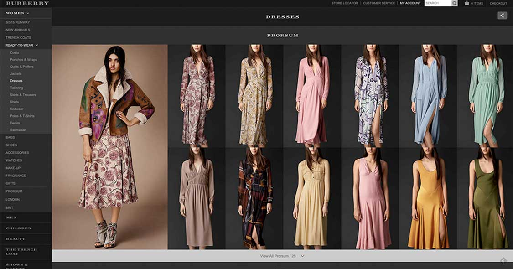Burberry使用暗灰色来散发出神秘、高贵和精致的感觉。当用户浏览Burberry的网站的时候，会觉得这个网站是有讲究的，有品质的，形成信任感。
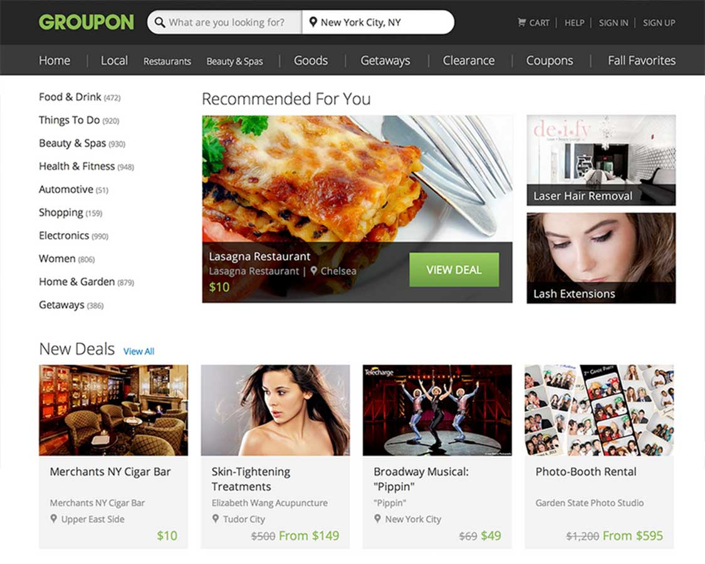Groupon 使用了绿色和灰色来表现“节约资金”和“独特”的特性。
你想被信任？
蓝色能够赋予用户安全、可信和稳定感，这符合信用卡所应具备的所有特性。
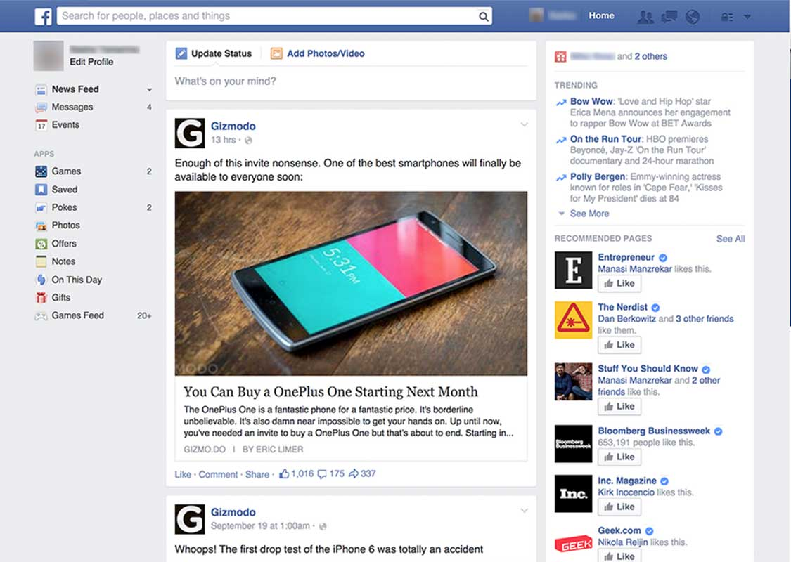作为社交网站，Facebook 极其需要用户的信任，让用户能够自如地发布关于他们生活的信息，所以Facebook选择了蓝色来传递出“信任”的感受。
当你写下你的网站所需要的全部特性之后，你就需要选择一个合适的色彩开始你的设计了。为了更深入的挖掘这些信息，你需要了解一些关于色彩的术语和知识。文章的下半部分，我将为你详细讲述这些内容。
用色彩来定义网站：
色彩中的朋克！
《25个惊人的黄色系网站设计欣赏》色彩中的暖男！
《20个风格多样的绿色系网站欣赏》色彩中的雅痞！
《26个优雅的蓝色网站设计欣赏》
本文由优设网原创翻译，请尊重版权和译者成果，转摘请附上优设链接，违者必究。谢谢各位编辑同仁配合。
【优设网 原创文章 投稿邮箱：2650232288@qq.com】
================关于优设网================
“优设网uisdc.com“是国内人气最高的网页设计师学习平台，专注分享网页设计、无线端设计以及PS教程。
【特色推荐】
设计师需要读的100本书：史上最全的设计师图书导航：http://hao.uisdc.com/book/。
设计微博：拥有粉丝量86万的人气微博@优秀网页设计 ，欢迎关注获取网页设计资源、下载顶尖设计素材。
设计导航：全球顶尖设计网站推荐，设计师必备导航：http://hao.uisdc.com
———————————————————–
想在手机上、被窝里获取设计教程、经验分享和各种意想不到的”福利”吗？
添加 优秀网页设计 微信号：【youshege】优设哥的全拼
您也可以通过扫描下方二维码快速添加：
非特殊说明，本文版权归原作者所有，转载请注明出处
本文地址：http://www.uisdc.com/thinkful-color-theory-basics-1
【推荐！设计师必备网址导航】http://hao.uisdc.com
_files/loading.gif)
_files/kAxBD5d.jpg)
_files/team1zp.jpg)
_files/team2cz.jpg)
_files/team3sl.jpg)
_files/team4wz.jpg)
_files/team5yy.jpg)
_files/team6xl.jpg)
_files/team7qz.jpg)
_files/team8kk.jpg)
_files/team9xy.jpg)